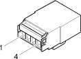

D060 Air Bag connection (FACIA)
- Path
- Electrical equipment > 3 Connectors > D Intermediate couplings > D60 Air Bag connection > D060 Air Bag connection (FACIA)
- Kind
- connector pinout (pin -> wire colour -> other end)
- Applies to
- all engines; all production periods; only with equipment: ESP and ESP
- Interactive page
- https://sloeber94.github.io/elrnDB-fMltpl/en/#/186008514
Applies to: all engines; all production periods; only with equipment: ESP and ESP

Wiring | Colour |
|---|---|
BIANCO (white) |